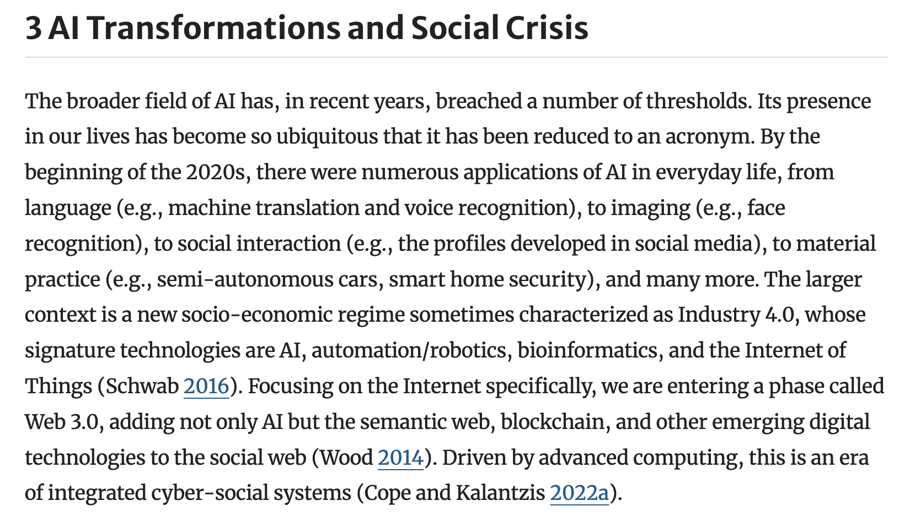
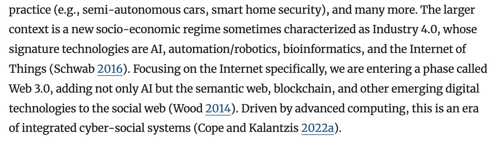

| Quick Thoughts on Reviewing the Literature |
| A Literature Review should help your reader understand: - what has been said before on your research topic - and what has not been said. This is the gap your own research will fill. |
| A brick in the wall? Is knowledge a wall? Karl Popper: a kind of web - the more we know, the more we don’t know? Or a constellation of stars? Or a map of a landscape? These and other metaphors can help you describe what your review is doing |
| Use dynamic verbs: You want to fill a gap - but first need to show how the gap first emerges You will show how the literature weaves a web - and what new strands you will add You will describe the coordinates of a constellation of knowledge - and what new lines your research will draw You will outline the contours of a map of knowledge - and chart areas of that map that remain obscure or unknown Etc etc - write your own metaphor! |
| Consider how you want to organise your review It is like a course on your topic and question. Do you want: Drill in or drill out? Theory followed by practice? Practice brought together by theory? Identify major themes? Discuss key debates? Big / general to small / specific? All good - but lay this out for your reader. Imagine you are teaching your literature - think what pedagogical organisation works. |
| Initial premise: “socio-economic regime” (Schwab
2016) Consolidate: “web 3.0” (Wood 2014) Conclude: “integrated cyber-social systems” (Cope and Kalantzis 2022a)  |
| BEFORE: Increasingly, scholars have studied AI’s
effects on education. Cope et al. (2024) states AI will change pedagogy.
Su et al. (2024) argues that AI can help students study more
effectively. Magee et al. (2024) suggests AI can weaken the critical
ties between teacher and student. Less is known about how AI affects
teacher attitudes to assessment. AFTER: Scholars hold mixed and even conflicting views on the effects of AI on education. For instance, Cope et al. (2024) states AI will change pedagogy. Su et al. (2024) argues these changes can be positive, with AI helping students to study more effectively. Conversely, Magee et al. (2024) suggests AI weaken the critical ties between teacher and student. This ambivalence about the effects of AI motivates my own research into teacher attitudes. Create some tension, an academic cliffhanger; what happens next? |
| ORIGINAL: As Cope and Kalantzis (2022a) suggest, we
are entering a new socio-economic
regime… ALTERNATIVE: As Cope and Kalantzis (2022a) suggest, we are entering a new era of integrated cyber-social systems. Invoking Schwab (2016), they argue this is part of a new wider socio-economic regime…  |